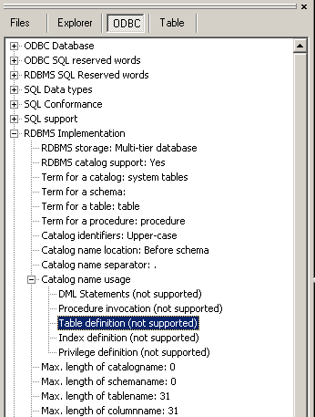

The name of a physical table in the database. This can be one of four naming conventions
1: base-table-identifier
2: schema-name . base-table-identifier
3: catalog-name catalog-name-separator base-table-name
4: catalog-name catalog-name-separator [schema-name .] base-table-name
A base-table-identifier is a 'user-defined-name' consisting of letter, followed by letters, digits and / or underscores. The third syntax is only supported by databases that do not support schema's.
To see whether catalog names are supported and what the catalog-separator is, see the ODBC info tree under 'RDBMS Implementation', 'RDBMS catalog name usage'. Also the catalog-name-separator can be found under 'RDBMS Implementation', 'Catalog name separator'.
